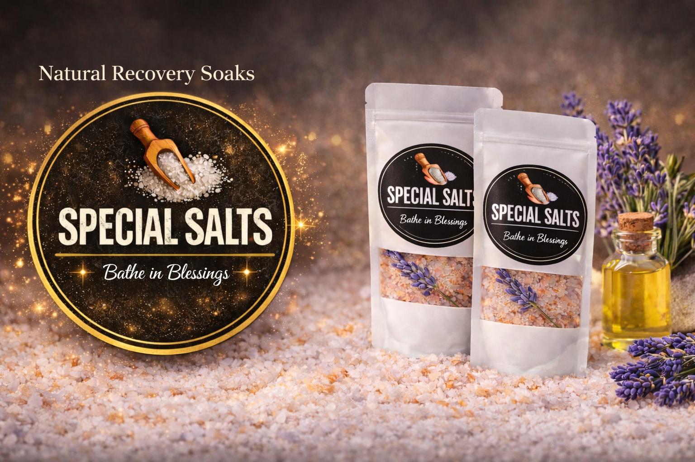
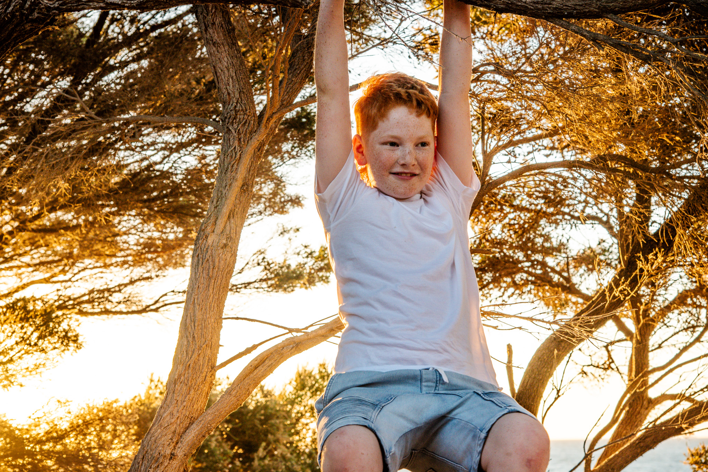
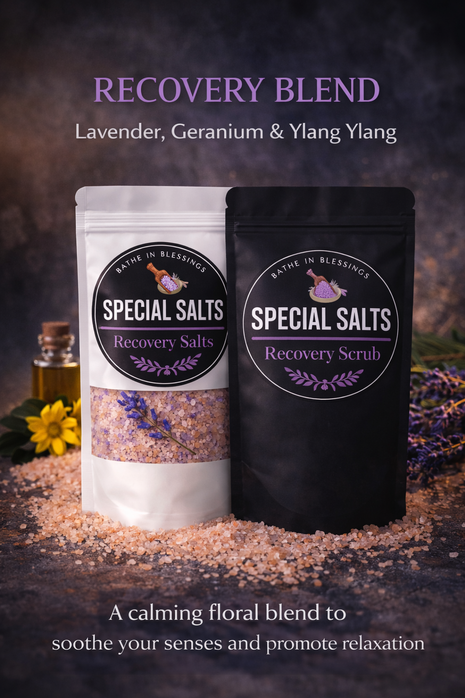
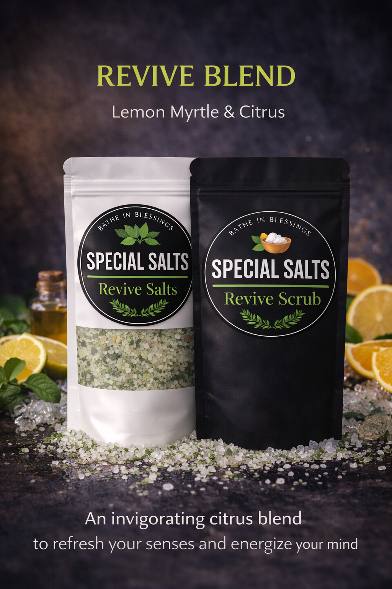

What’s Inside
A clean, simple blend of ingredients chosen for their purpose.



Special Salts began as a homeschool project created by Tyler.
Now 12 years old, Tyler first started making bath salt blends alongside his brothers two years ago, creating small batches to sell at Christmas time for family and friends.
As a young athlete playing multiple sports, Tyler was drawn to natural ways to support recovery after training and games. This sparked his interest in mineral salts, natural oils, and how simple ingredients can help the body relax and reset.
What began as a small family project has gradually grown into something bigger. Today, Tyler continues to develop his blends while learning about small business, product design, and selling through markets and social media.
Each batch is handcrafted using simple, natural ingredients chosen for their benefits.
Two thoughtfully developed blends, each with its own distinct feel and fragrance profile.

Soft floral relaxation
A calming floral blend featuring lavender, geranium, and ylang ylang.
This gentle combination creates a soothing bath or foot soak experience, perfect for slowing down at the end of a busy day. The soft floral aroma brings a sense of calm and comfort, making it an ideal choice when you want to unwind and enjoy a quiet moment of relaxation.
Crafted with mineral salts and natural oils, Recovery Blend is designed to turn an ordinary bath into a simple self-care ritual.
Fresh citrus mint uplift
A bright and refreshing blend featuring lemon myrtle, lime, eucalyptus, and peppermint.
This uplifting combination offers a fresh, clean aroma that feels invigorating and energising. Revive Blend is ideal when you want a more vibrant bath or scrub experience, bringing a crisp citrus and mint fragrance that awakens the senses.
Blended with mineral salts and natural oils, Revive Blend adds a refreshing touch to your bathing routine.

A clean, simple blend of ingredients chosen for their purpose.
We are currently offering bath salts and body salt scrubs in two sizes, with bath salts in white packaging and body salt scrubs in black packaging.
100g · $7
250g · $15
100g · $10
250g · $20
Mother’s Day gift hampers will also be available for our first market.
A simple guide for enjoying both product types at home.
Add to warm water, allow the salts to dissolve, and soak for 10–15 minutes.
Add to a warm bath, allow the salts to dissolve fully, and soak for 15–20 minutes.
Massage a small amount onto damp skin using gentle circular motions, then rinse thoroughly with warm water.
Take care when using body scrub in the shower or bath, as oils and salts may make surfaces slippery. For external use only. Avoid contact with eyes. Discontinue use if irritation occurs.
Follow along on Instagram for new content, updates, behind the scenes, and to message us directly.
Follow @specialsalts